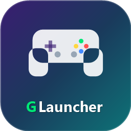

Sua biblioteca em um só lugar
Reúna jogos instalados, organize sua coleção, marque favoritos e encontre rapidamente o que quer jogar.

GLauncherSua biblioteca de PC organizada, personalizada e pronta para jogar — com uma interface inspirada em consoles.
Uma central de jogos feita para deixar tudo mais simples — e muito mais bonita.
Reúna jogos instalados, organize sua coleção, marque favoritos e encontre rapidamente o que quer jogar.
Enriqueça a coleção com capas, logos, fundos, descrições, gêneros, notas e ano de lançamento.
Navegue com controles Xbox ou PlayStation, use atalhos e transforme a interface com o modo Big Picture.
Escolha entre seis temas, personalize cores, avatar, nome e imagem de fundo.
Peça dicas para o jogo selecionado com Groq, OpenAI ou Gemini e sua própria chave de API.
Consulte processador, placa de vídeo, memória e armazenamento para conhecer sua máquina.
Importe os jogos encontrados no PC e acesse sua coleção a partir de uma única interface.
Detecta a conta Steam local e permite importar jogos instalados para o GLauncher.
Perfil e jogos instaladosConecte o perfil Xbox Live e procure jogos instalados pela Xbox app e Microsoft Store.
Xbox Live e PC Game PassEncontra jogos instalados pelos manifestos da Epic Games Store e facilita a importação.
Jogos instalados no PCAs lojas continuam responsáveis pelas contas, licenças, downloads e atualizações dos jogos.
O GLauncher complementa cada jogo com arte e informações para deixar a biblioteca fácil de explorar.
Busque artes na SteamGridDB, escolha entre resultados visuais ou use seus próprios arquivos.
Veja sinopse em português, gêneros, avaliação da comunidade, ano e capturas quando disponíveis.
Ao corrigir o nome de um jogo, o launcher pode refazer a busca por artes e dados que faltaram.
Favorite, altere nomes, ajuste imagens e remova jogos sem desinstalá-los do computador.
O modo Big Picture amplia a experiência para navegar de longe. Use o controle para percorrer zonas da interface, escolher jogos e abrir opções.
A interface também pode minimizar ao iniciar um jogo e voltar quando ele for fechado.
Peça dicas contextualizadas de progressão, puzzles e desafios, com foco em ajudar sem entregar spoilers. Você escolhe o provedor e configura sua própria chave.
“Como avanço nesta missão?”
Roxo Neon, Azul Elétrico, Matrix, Vermelho, Rosa Cyber e Ártico; personalize cores, avatar, nome e fundo.
Conquiste marcos pelo uso do launcher e acompanhe o progresso da sua coleção.
Sete efeitos gerados para navegação, seleção, retorno, favoritos, zonas, inicialização e erros — com opção para desligar.
Consulte CPU, GPU, memória e drives para conhecer as especificações do seu PC.
Confira se há uma versão nova e abra o download oficial diretamente pela tela Sobre.
Use favoritos, opções por jogo e reprocessamento de artes para manter a biblioteca em ordem.
O GLauncher foi feito para rodar em PCs Windows. Alguns recursos conectados precisam de internet.
Explore o manual integrado, acompanhe suas conquistas e veja a biblioteca de jogos em ação. Clique em uma imagem para ampliá-la.
Explore o projeto no GitHubBaixe o instalador oficial e monte sua biblioteca no seu ritmo.
Baixar o GLauncherUse sempre a versão mais recente disponível na página oficial de releases.
Importe jogos compatíveis ou adicione executáveis à sua biblioteca.
Configure a aparência, conecte seu controle e escolha seu próximo jogo.
Não. Ele organiza e inicia os jogos instalados; contas, licenças, downloads e atualizações continuam nas lojas oficiais.
Steam e Epic detectam instalações locais. Para recursos de perfil do Xbox Live, conecte sua conta Microsoft pelo próprio launcher.
Não. Escolha Groq, OpenAI ou Gemini e configure sua própria chave. Custos e limites seguem as condições do provedor escolhido.
Sim. Use mouse e teclado; o gamepad Xbox ou PlayStation é opcional e pode ser usado para navegar pelo modo Big Picture.
Os jogos locais podem ser iniciados pelo launcher. Internet é necessária para buscas de artes, dados online, traduções, integrações de perfil e atualização.